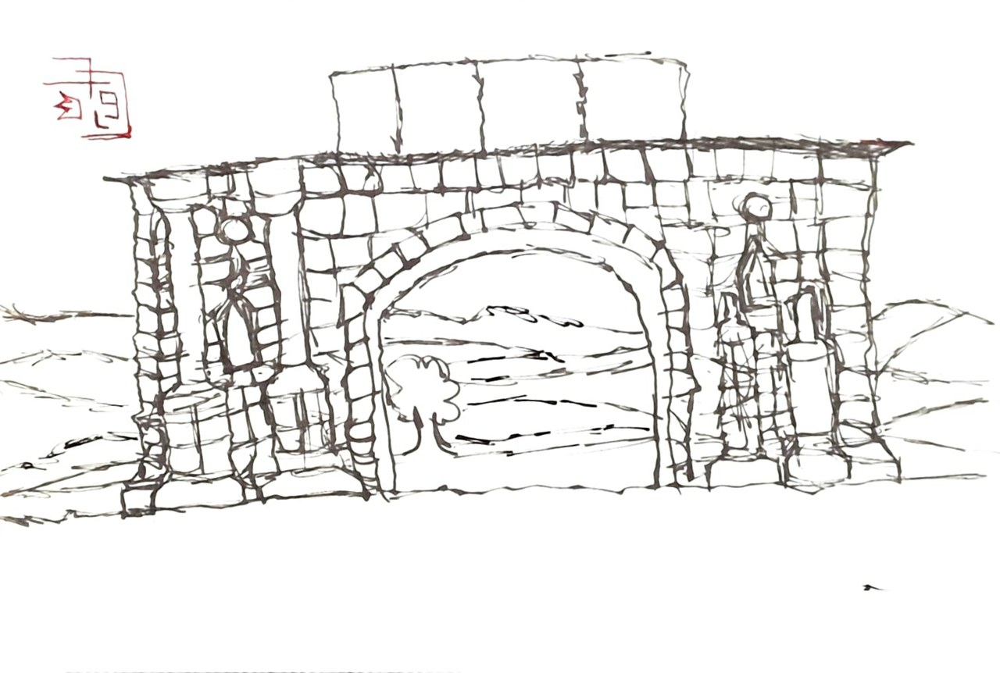

Focus areas
- Critical studies: surveillance, propaganda, platform power
- Mathematics
- Machine Learning projects

Urban sketch — Wikimedia Commons (public domain / CC as credited)
Projects
Project details and code live on GitHub. See the Projects section in the CV or visit my GitHub for notebooks and demos.